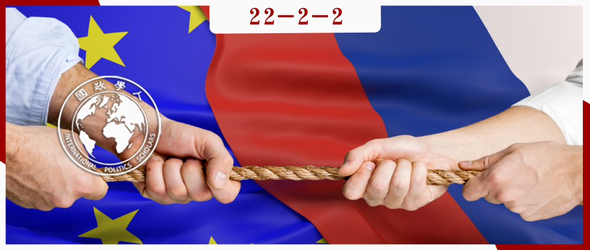

收录于合集 #《国际关系前沿》2022年第2期 8个

作品简介 ****
作者： Patryk Czulno，布里斯托大学政治与国际关系学院研究员。
编译： 谭伟业（国政学人编译员，中国人民大学国际关系专业硕士生）
来源： Czułno, P. (2021). Theorizing and Testing Cross‐Loading: The EU Common Foreign and Security Policy and Polish Concessions to Germany’s Russia Policy. JCMS: Journal of Common Market Studies.
归档： 《国际关系前沿》2022年第2期，总第41期。

导读
这篇文章主要通过介绍和拓展“交叉传达”的框架，发现了欧盟成员国外交政策相互影响的机制，并总结了四个步骤。此外，本文还运用了波兰在2008—2015年间对俄相对缓和的外交政策作为案例研究，成功验证了作者在文章中创设的“交叉传达”四步骤。
这篇文章的创新之处在于拓展了“交叉传达”这一欧洲化方式的内涵，搭建了较为完备的理论框架，为解释欧盟成员国外交政策提供了新的解释机制。这一“交叉传达”的研究结果或许可以为研究当下俄欧关系危机提供一些新的解释视角。
摘要
欧盟成员国有时会追求截然不同的利益。文章讨论了欧盟在促使成员国间在这方面让步的作用。首先，文章为“交叉传达”这种尚未充分研究的欧洲化模式建立了理论框架。战略社会化、经验学习和政策转移解释了国家行为体如何将欧盟共同外交和安全政策（CFSP）中的合作实践纳入双边层面。同时，理性制度主义和尺度政治有助于从理论上解释在利益不同的情况下国家间如何建立战术性联盟和共识。其次，文章检验了“交叉传达”策略，以证实波兰在2008-2014年对俄罗斯的和解性政策实际是欧盟介入下波兰对德国的让步。可以说，在东部伙伴关系中追求战略利益的波兰，战术性地采用了德国的方法，即制定平行的对欧和对俄政策。因此，波兰认可德国有能力与更强大且较为亲俄的成员国就东部伙伴关系达成共识。
编译
01
介绍
这篇文章对欧盟内部的国际合作的特点提出了新的见解。本文首先设计并检验了相关研究，即在CFSP一体化背景下，成员国在外交上追求不同利益时，如何以及为何愿意做出双边让步。首先，本文构建了交叉传达（cross- loading）的模型，从理性制度主义解释，并基于过程追踪方法设计了实证研究。其次，本文通过案例研究，以证实波兰在2008-2014年对俄罗斯的和解性政策实际上是对德国“东部政策”的让步。 为什么尽管波兰与德国在俄欧关系及东部伙伴关系中有着不同的利益，但两国还是能够做出让步、建立联盟并达成共识？ 本文的目的正是回答这一问题。
“交叉传达”是成员国外交政策欧洲化的三种方式之一。总的来说，成员国外交政策的“欧洲化”揭示了欧盟发展与成员国动态之间的因果关系。“欧洲化”的其余两种方式更为常见，即“上传”（uploading）和“下达”（downloading）这两种垂直模式。前者指国家偏好投射到欧盟层面的谈判中，后者指国家政策或结构采用欧盟的政策或做法。然而，下达这一垂直欧洲化方式主要是指欧盟对成员国直接施加指令或法规。横向欧洲化方式（很大程度上与交叉传达意思重叠）其实反而更准确地描述了欧盟外交政策的下达。
首先，横向欧洲化意味着欧盟只是通过施加间接影响以构建和促进一体化。欧盟提供解决问题的最佳做法，从而引导成员国加强合作，而无需强制成员国遵守欧盟的指令或法规。其次，横向欧洲化也意味着成员国能够分享最佳实践，交流信息，并接受他国的意见。类似地，交叉传达指的是“国家或其他实体之间的思想、规范和行为方式互相交流”，而欧盟则为之设置了舞台。交叉传达描述了只发生在欧洲之内的政府间的政策转移和来自成员国之间的政治变化。本文所指的交叉传达整合了垂直和水平的欧洲化。作者将欧盟的间接影响及欧盟的背景概念化，即成员国采用欧盟的合作实践作为上传其国家偏好的一种策略。作者还解释了欧盟背景如何会导致双边层面的政策转移。
最后，文章的案例研究填补了实证文献的空白。对欧盟内部的波德外交政策合作的现有研究主要展示了波德的双边友好关系，但没有过多关注和分析这种友好关系是否来自两国的相互让步。
02
交叉传达：概念、理论、研究设计
根据上述定义，我们可以确定交叉传达的两个核心假设：(1)国家政策变化只受到欧盟的间接影响；(2)这一变化主要来自其他成员国。 作者将就外交政策欧洲化的主要机制，即社会化和学习机制，详细阐述上述两个假设。第一个假设能够阐明交叉传达的前两个阶段，而第二个假设则是交叉传达第三阶段的基础。
1）从战略社会化、经验学习再到政策转移
关于欧盟对成员国之间关系的间接影响，成员国外交官可以对CFSP的合作决策进行战略性的社会化，然后在其双边合作中进行经验学习。
首先，社会化意味着在CFSP层面进行频繁、密集和长期互动的国家采用了CFSP协商和建立共识的做法；在战略社会化中，国家采用这些做法来提高其合作声誉和合法性，从而更好地促进其利益。其次，这种以共识为导向的政策制定可以通过经验学习实现。关于外交政策的欧洲化，已经战略性社会化的国家行为者，会更改其信念，并改变其行为，以有效追求其政策。就交叉传达而言，经验学习意味着将这种CFSP层面的经验纳入双边层面的合作和共识行为，比如双边磋商、联合性或妥协性的宣言、共同行动。
此外，关于交叉传达的另一个核心假设（即成员国之间的影响），经验学习可以导致国家习得他国做法，而这一过程基于政策转移的逻辑。政策转移的假设是，寻求解决自身问题的行为者可能会在共同组织中寻找关于他人成功解决问题的知识。 在外交政策欧洲化方面，CFSP层面以共识为导向的氛围可以提供向他国学习或是向他国让步的机会，以便国家能够在长期内或在更重要的问题上寻求谈判利益。因此，在 CFSP 层面上学习有效决策的行为者，也可以获取对方的经验，并在跨国范围内模仿其做法或政策。 因此，交叉传达可以最终导致政策转移，即一个成员国采用另一个国家的决策，而不仅仅是CFSP的做法。
理性制度主义视角下的交叉传达
理性制度主义基于建立战术联盟和达成共识的逻辑，帮助我们更好地解释交叉传达。总的来说，理性制度主义指行为体有一套固定的偏好，并依靠战略计算来最大限度地实现这些偏好并使其成本最小化。行为体也设计制度（如通过促进信息共享）来确保他们自己的偏好，并在利益多元化的情况下减少不确定性。理性制度主义可以解释国家战略社会化（即第一阶段）。因为国家行为体试图能够影响欧盟决策，并转化利用欧盟的资源，以更好地追求其目标，特别是在自身无法单独实现这些目标的时候。行为体也可以去适应（即将自身社会化）那些符合自身战略利益的欧盟政策和结构。
然而，理性制度主义难以解释在成员国利益不一致的情况下模仿学习他国的行为（即第二阶段）。作者认为，成员国之间尽管共享规范性理念，但不一定共享其对外交事务的看法。
2）如何解释不同利益集团之间建立战术联盟和达成共识？
更具体地说，为了使不同利益集团之间的战术联盟建设得以理论化，作者借鉴了理性制度主义的差别赋权概念和更广泛的尺度政治概念。前者指国家行为者可以通过相互加强或限制能力来增加其对欧盟的影响。后者指如果利益追求能够获得更高级别的决策，即更强政治权力的位置，就会变得更有效率。综合上述两种理论，作者认为成员国可以在双边层面参与差别赋权，从而在CFSP层面寻求尺度政治效应。 因此，成员国可以承认另一成员国在更广泛的政府间谈判中拥有更强的影响力。特别是，它可以期望另一个成员国帮助说服其他国家（传统利益与自己的不一致的国家）在CFSP层面接受自己的立场。
最后，建立这种联盟可以决定双边政策转移（第三阶段）。总的来说，在共同机构内，利益驱动的行动者会陷入集体行动困境，从而产生集体的次优结果，这意味着个人可以从交换中获得收益，但不能最大化其收益。因此，上述在自己的群体内保持内部凝聚力的行为体可以非正式地塑造彼此的政策。 在本文中，一个国家希望得到他国及其传统盟友的支持，甚至即使他国在某一问题上持不同立场也可以寻求共识和交叉转移。
3）从过程跟踪的角度看交叉传达：如何设计案例研究？
具体地说，本文的案例研究追踪了一个由四种主要行为及其动机组成的因果过程。第一，在本国机构（外交部、总理办公室等）工作的外交政策参与者，或这些机构在其他欧盟国家（大使馆）和CFSP机构中的行为者，表达了通过战略性使用CFSP实现其外交利益的意图。行为者提出了其上传倡议，比如提出想法、发布非官方文件或对CFSP的政策制定提交正式提案。第二，在CFSP中行为者在战略上社会化，形成高效的上传策略。第三，行为者参与经验学习，在双边层面上展示上述行为。第四，行为体进行政策转移，即他们建立共识并采用对方的外交政策议程或做法。诚然，一个国家的新议程或做法可能更符合另一个国家在某一外交问题上的传统利益。然而，上述因果过程应该证实，一个国家的让步是为其自身长期稳定的利益，或为其更有效地上传其政策服务的。
03
交叉传达：欧盟引导下的对俄政策转移？
下面的案例研究证明，在CFSP内，传统上对俄持怀疑态度的波兰在2008-2014年提出的对俄和解外交政策方针，在很大程度上是从德国传统上对俄采取的偏向合作的政策中交叉传达过来的。本研究探讨了波兰在东部伙伴关系中的上传其利益与战略以及波德在俄欧政策上建立联盟和达成共识之间的因果关系。首先，波兰对东部伙伴关系的兴趣决定了该国在更广泛的欧盟东部政策中的战略社会化（步骤1和2）。此外，波兰与德国结成了东部伙伴关系联盟，也从德国的俄罗斯政策中获取了经验。波兰认识到德国在广泛的欧盟东部政策的影响力，特别是对其他亲俄成员国的影响力（步骤3）。因此，波兰从德国促进俄欧合作的方法中得到了启发（步骤4）。
1）波兰上传利益和策略
由公民纲领（Platforma Obywatelska）领导的波兰政府在2007年底至2015年的两届任期期间，不再否决之前欧盟与俄罗斯关于新的伙伴关系与合作协议（PCA）谈判。政府也恢复了与俄罗斯的高级别外交政策会议，甚至加入了波兰—德国—俄罗斯的加里宁格勒三角关系。关于波兰对俄新政策的欧洲化，以往文献承认，波兰参与俄欧合作协议谈判是为了避免被排斥在俄欧关系之外。波兰普遍担心去欧洲化的对俄关系将导致俄欧关系由德国和法国合作主导，从而损害波兰的东部政策利益。
然而，波兰的对俄政策欧洲化也可以通过与德国的交叉传达来解释，这意味着波兰在欧盟东部政策方向上追求其利益时学习了德国对俄的合作方式。 波兰的东部政策优先考虑与俄罗斯以外的东边邻国合作，这主要出于波兰遏制俄罗斯影响为导向的地缘政治安全考虑。因此，波兰试图在战略上利用欧盟的东部邻国政策。
2）波兰与德国建立联盟
因此，为了促进东部伙伴关系，波兰承认德国在这一进程中的领导地位。波兰外交部以及在2008年和2009年向德国外交部和总理办公室宣传东部伙伴关系的波兰驻柏林大使馆都期望德国能够帮助说服其他西欧大国支持东部伙伴关系。 波兰外交部特别认识到，考虑到德国在欧盟对俄政策中牵涉利益重大，没有其他成员国可以在欧盟提供类似的帮助。同样，波兰代表承认，德国的东部政策立场通常得到法国、意大利、荷比卢以及英国和一些斯堪的纳维亚国家的支持。
波兰还利用了魏玛三角（即德、法、波三国组成的合作机制）的潜力，争取德法以及其亲俄派对东部伙伴关系的支持。三角关系展现了这三个国家在推动欧盟决策方面的互补性，特别是在规模、地理位置、经验和利益方面。此外，三角关系还结合了波兰在东部邻国的利益，法国与俄罗斯的战略伙伴关系，以及德国在两者之间更平衡的做法。同时，这种结合有可能整合来自波兰、法国和德国的传统盟友对外交政策的支持。因此，在经验学习方面，波兰支持法国发起的地中海联盟，从而赢得了传统上面向南方的法国及其主要盟友（意大利和西班牙）对东部伙伴关系（作为改革后的欧洲邻国政策的一部分）的支持。波兰也在争取德国的支持。简言之，波兰希望魏玛三角能够为东部合作伙伴上争取支持，这也促使波兰在俄罗斯问题上与德国和法国合作。
此外，波兰还依靠德国在CFSP中的整体影响力，以及德国对东部伙伴关系的相对支持立场。 首先，德国经常充当欧盟广泛的外交政策的领导，能够与西欧国家和中东欧国家在欧盟东部政策上达成战略联盟。其次，与其他西欧国家相比，德国对东部邻国政策表现出强烈的兴趣和参与，尽管最初有些不情愿，但德国还是决定大力支持东部伙伴关系的启动。因此，波兰遵循欧盟层面的做法，即国家行为者通过提及类似或更强大的成员国的参与，将其政策描述为更可靠的政策。波兰政府经常与其他国家的外交部和CFSP机构沟通，表示德国与波兰在东部伙伴关系上的立场相同，旨在说服其他国家相信这一政策。有趣的是，即使是波罗的海国家以及其他维谢格拉德集团国家在CFSP的代表也接受波兰作为一个非正式的区域领导者，条件是波兰作为德国的强势伙伴能够代表这些国家的立场。因此，波兰与德国合作，不仅是为了说服德国的传统亲俄盟友相信东部伙伴关系，而且也是为了加强自己的伙伴对东部伙伴关系的支持。
3）共识：波兰对德国的让步?
在某种程度上，波兰将德国的对俄政策转移到国内了。这意味着波兰前所未有地积极参与了俄欧合作。这不仅符合德国的传统政治，也符合德国对波兰的期望。诚然，德国认为波兰对俄关系好转有着重大利益，这些利益足以为德波政策相近提供论据，而不一定能说明是交叉传达的作用。然而，上述研究证实了德国和波兰在俄罗斯问题上的交叉传达，因为上文认为波兰对俄罗斯的和解政策实际上是在利用德国的影响力，所以波兰才愿意接受德国的亲俄立场，以实现其在CFSP中的自身利益。
此外，波兰模仿了德国的合作风格，但没有承袭德国在俄罗斯的利益。尽管波兰政府对俄做出了一些友好的姿态，但是它仍然专注于东部伙伴关系。当时的波兰外交部高级官员也认为，虽然波兰倾向于对俄罗斯采取友好的态度，但它并没有采用德国的议程。值得一提的是，波兰并未克服其与俄罗斯在地缘政治或安全方面的差异。 这些观察结果证实，波兰在东部合作伙伴倡议中的稳定利益是推动波兰对德国做出让步的主要因素，而且让步也仅仅局限在模仿德国对俄罗斯的合作风格方面。
04
结论
这篇文章设计了交叉传达这一方式的欧洲化研究。在这一过程中，CFSP间接引起了成员国之间的相互影响。交叉传达源于国家之间的战略社会化。交叉传达还包括行为体在双边合作中采用CFSP的战略。 交叉传达帮助我们理解为何利益不一的国家能够建设战术联盟。在这样的联盟中，成员国期望通过获得对方的影响能力，主要是对方与其他盟友建立共识的能力，以帮助扩大其在CFSP中获得的支持。最后，这种交叉传达甚至引导利益驱动的成员国在彼此的做法或议程之间达成共识，实现政策转移。
运用交叉传达追溯欧洲化进程，证实了波兰在2008-2014年对俄罗斯的和解性外交政策采用了德国的合作风格。这一过程也为波兰和德国在CFSP内部政府间权力配置的背景下建立联盟和达成共识提供了洞见。因为法国、意大利和西班牙的东部政策利益更加亲俄，所以波兰政府特别期望能够获得德国对这些强势成员国的影响力，从而帮助增加波兰东部伙伴关系的支持度。因此，波兰不仅与中欧和东欧立场相近的国家合作，而且还与德国合作。同时，波兰也回应了德国对促进俄欧关系的期望，甚至加入了加里宁格勒三角区。对交叉传达的进一步研究可以考察德国邀请波兰参加对俄合作是否是因为德国承认波兰在其他疑俄的中东欧国家具有影响力，以及德国是否因此对波兰在东部合作伙伴中的立场做出了对等的让步。
最后，还可以继续检验交叉传达在解释波德之间，以及类似的欧盟其他国家之间更广泛的外交政策关系方面的潜力。首先，考虑到波兰和德国在北溪项目上立场的差异，交叉传达的解释力可能会有所削弱。其次，交叉传达可以帮助我们理解2005-2007年和2015年以来波兰法律与公正党执政时期的波德合作困难。因为在这些时期波兰在CFSP方面的社会化程度较低，或者波兰对德国在CFSP层面支持自身政策的期望较低。第三，交叉传达有可能解释了最近德国对俄批评是否受到了波兰的影响。例如，在俄乌危机的背景下，德国对欧盟制裁政策的支持可能不仅仅是由德国自身对这场危机的反应所决定的，也是由德国与波兰在欧盟制裁上的合作决定的。
词汇整理
交叉传达 Cross-loading
共同外交与安全政策 Common Foreign and Security Policy（CFSP）
尺度政治 **** Politics of scale
欧盟睦邻政策 European Neighborhood Policy
东部伙伴关系 Eastern Partnership（EaP）
审校 | 王芷汀 卫艺璇
排版 | 梁羽 云琪布日
文章观点不代表本平台观点，本平台评译分享的文章均出于专业学习之用, 不以任何盈利为目的，内容主要呈现对原文的介绍，原文内容请通过各高校购买的数据库自行下载。

国政学人
支持学术公益与知识传播
微信扫一扫赞赏作者 __赞赏
已喜欢，对作者说句悄悄话
取消 __
发送给作者
发送
最多40字，当前共字
上一页 1/3 下一页
长按二维码向我转账
支持学术公益与知识传播
受苹果公司新规定影响，微信 iOS 版的赞赏功能被关闭，可通过二维码转账支持公众号。